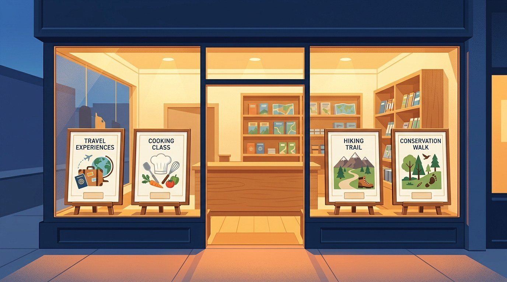

Illustration: AI-generated for EA Hospitality Pulse — synthetic image, not a photograph
Kenya curated 75 experiences this month. Not one of them can be bought where it is displayed.
The Magical Kenya Signature Experiences collection grew to 75 entries on 15 October. The public page carries no price, no availability and no booking button, and Kenya's own draft tourism strategy already names the missing piece.
On the morning of 15 October, in a hall in Nairobi, June Chepkemei read out fourteen names. "We are proud to welcome 14 new experiences into the Magical Kenya Signature Experiences collection," the chief executive of the Kenya Tourism Board said at the unveiling. Among the new entries were a cross-border culinary route and a conservation experience at Ol Pejeta Conservancy, home to the world's last two northern white rhinos. Hawa Ali, who founded the African Food Trail, told the room that "we are moving into a new age in tourism where people want to see more." Enid Nkatha, head of tourism at Ol Pejeta, said she was grateful "that people will now come and help us with conservation work." With the fourteen added, the collection stands at 75 curated entries for the 2026 to 2028 cycle. Chepkemei said the board wanted to back products that are "market-ready, distinctive and capable of delivering."
Five days later, on the morning of 20 October, the collection's public page carried 72 listings. Each one has a title, an operator or venue name, a region, and one or more category tags. Not one carries a price. Not one shows availability. There is no booking button, and no sign in the design of the page that there was ever meant to be one. A handful of the tags are misspelt. The shop window is real, and in places it is beautiful. There is no till in it.
That is not an oversight, and it is worth being precise about why, because the gap between what the programme is and what operators hope it is does most of the damage. Magical Kenya Signature Experiences is a recognition and promotion scheme, and it was built as one. The published programme brief sets out the route in: an operator emails the board's experience team, completes a signed prequalification quiz, then fills in an application form. Eligibility is demanding. The operator must deliver an authentic Kenyan experience, serve international travellers, hold the required licences, have at least two years delivering the product, and be, in the brief's own words, "the provider and point of sale for the customer." It must also have "a website with inspiring content that lets travelers book," experience of working with international tour operators in the board's key source markets, and must meet export-ready criteria. Later expansion rounds added desk audits and on-site audits to that sequence.
Read that list again and the architecture becomes clear. The state checks that you can already sell before it will agree to display you, and then it displays you. What the designation supplies is promotion: familiarisation trips, exhibitions, collaborative initiatives and training. John Ololtuaa, the tourism principal secretary, put the purpose plainly when an earlier batch took the collection to 61 entries, saying the programme "bridges this gap and addresses the seasonality issues." The board's chairman at the time, Francis Gichaba, said that "through this collection, Kenya has a lot more to offer beyond the wildlife and beach safari."
For one kind of business that is a genuine distribution asset, and the case deserves to be made at full strength. A lodge selling a twelve-night itinerary into Europe is not sold by a website. It is sold nine months out, by a human being at a specialist operator, out of something close to a brochure, after that human being has either visited the property or trusts someone who has. A famil is how that trust gets built, a trade show is where the contracting happens, and export-readiness is exactly the right thing for a national body to be testing at the door. Kenya's draft National Tourism Strategy for 2025 to 2030 still carries an average length of stay target of twelve to fourteen nights. Measured against that model, the collection is correctly built, and the fourteen new entrants have been handed something of value.
Then look at what the fourteen actually are. The categories the board listed are adventure, wellness, culinary tourism, conservation, culture, luxury, family travel, shopping and outdoor recreation. A food trail. A morning spent helping with conservation work. These are not twelve-night products and they were never going to be. They are day-rate and half-day purchases, decided late, very often by somebody who is already in the country, already booked into a camp forty minutes away, and looking at a phone on a Tuesday evening to work out what to do on Thursday. That purchase does not pass across a European tour operator's desk the previous September. It passes through whatever surface the traveller happens to be holding, and it clears or it does not clear in about ninety seconds.
The surfaces that take that purchase have been getting more demanding, not less. On 14 October, the day before the Nairobi unveiling, Booking Holdings launched Vayo, an artificial intelligence travel assistant, in invite-only private beta, with a planned investment of 100 million dollars behind it. Vayo reads confirmations out of a traveller's inbox, assembles them into a trip, then watches the trip for price drops, availability changes, delays and cancellations. For now it books restaurant tables through OpenTable and hands flights and hotels back to suppliers, with transactional booking promised within weeks. Mike Fridgen, its co-founder and chief executive, described the ambition as follows: "Our goal is to provide complete coverage of supply and enable drop-off [to suppliers]." Glenn Fogel, who runs Booking Holdings, said the product "takes a completely traveler-centric approach."
Strip the language back and "complete coverage of supply" is an engineering requirement, not a marketing one. Coverage means inventory a machine can see, price, hold and change. An experience that exists as a page of prose, a region tag and a telephone number is not covered, cannot be covered, and will not be surfaced by anything that has to quote a price to a traveller before it earns a commission. A recognition badge has no application programming interface. The nine hundred words of lovely copy behind each listing are, to that layer of the industry, invisible.
None of which is news to the Kenyan state, and this is the part that should sharpen the argument rather than soften it. The same draft strategy that sets the twelve-to-fourteen-night target also calls, in its own enabling section, for a destination management system "with a booking option" and an online tourism repository intended to work as a one-stop shop. Its strengths-and-weaknesses assessment lists, as a weakness, a "lack of digital tools for seamless tourism services." The diagnosis is the government's own, written down, in a published document. What has been shipped since is display. In December the ministry and the board unveiled a Magical Kenya Souvenir Passport, in physical and digital form, for collecting destination stamps, alongside Hapa Ni Wapi, a domestic platform showcasing curated packages such as road trips and beach getaways. Rebecca Miano, the tourism and wildlife cabinet secretary, said the passport "will allow both Kenyans and our international visitors to document their stay." Chepkemei said that "by gamifying travel and making it more rewarding, we are promoting tourism while fostering national pride." October's unveiling belongs to the same family. Three windows, no till.
The demand numbers make the omission more expensive, not less. International arrivals reached about 2.79 million by June 2026, an 88 per cent increase on the 1.48 million of 2022, with earnings of 564 billion shillings over the same period, up 110 per cent from 268 billion, figures attributed to the Government Delivery Unit. Kenya is not short of visitors and it is not short of recognition. The 2030 targets, though, call for 5 million arrivals and 1.2 trillion shillings, and the strategy proposes that niche products should make up 35 to 40 per cent of the total product range by then. Niche product is precisely the category where the booking friction is worst, because it is small, perishable, operated by businesses too thin to run their own distribution team, and bought in the last forty-eight hours.
Daniel Mbugua, chairman of the Tour Operators Society of Kenya, told Tourism Update in January that Kenya was facing "product fatigue" in its traditional safari circuits, and characterised 2026 as a "recovery-plus-growth" moment rather than a boom. The fatigue is real and the diagnosis is right. But more product is only an answer to fatigue if the product can be bought, and the state's contribution to the buying is still a line item in a draft.
For the fourteen businesses whose names were read out last Wednesday, and for the sixty-one that were already in, the practical conclusion is unglamorous. The designation is a credential, not a channel, and a credential is only worth what you spend it on. Spending it looks like this: a published price and live availability on your own site, not a contact form; a connection into whichever marketplaces actually sell activity inventory in your market, accepting the commission as the cost of being visible; a product that a guest at a neighbouring lodge can buy on Thursday for Saturday without a phone call; and an honest audit of what the last cycle's familiarisation trips and exhibition stands actually produced in bookings, by name, so that the next ones can be argued for or dropped. If the only measurable output of a national designation is a logo for the website footer and a shared stand at a trade fair, the business has been promoted. It has not been distributed.
The fourteen names in that Nairobi hall were an achievement, assembled by people who built something worth seeing and then passed an audit to prove it. The window Kenya has built for them is the best in the region, and the argument here is not that it should not have been built. It is that the country has now built the window three times in eleven months, each time to warm applause, while the thing a traveller needs in order to hand over money remains unbuilt and, in the government's own paperwork, acknowledged as missing.
📣 Telegram 💬 WhatsApp 💼 LinkedIn 📚 All guides